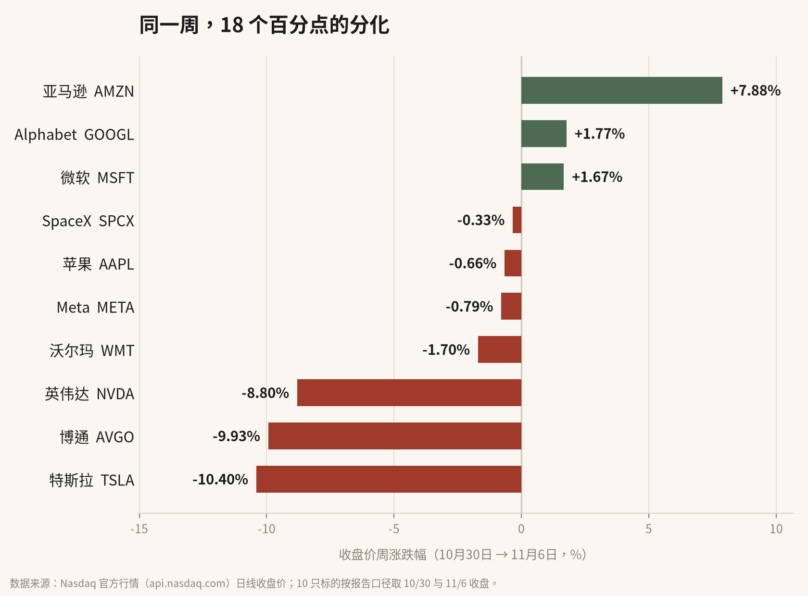
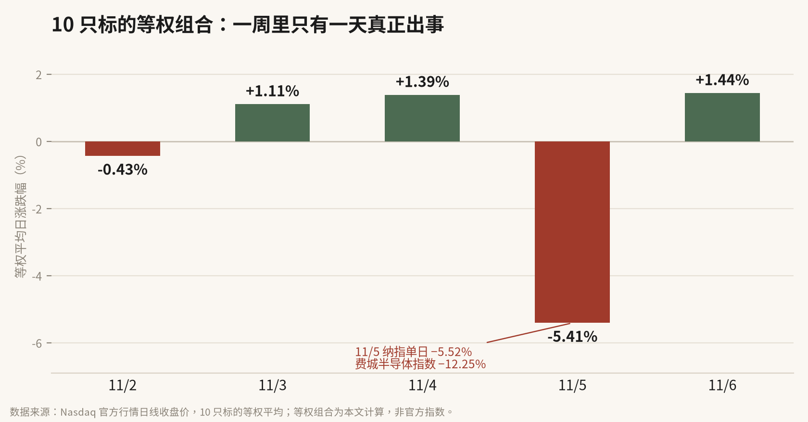

NASDAQ TOP 10 · 本周复盘
11 月 5 日，纳斯达克综合指数单日跌 5.52%，是 2025 年 4 月以来最猛的一次。
同一天，英伟达跌 9.26%。
但把 10 月 30 日到 11 月 6 日的收盘价连起来看，画风完全不一样：亚马逊一周涨 7.88%，特斯拉一周跌 10.40%。同一批 AI 产业链上的公司，首尾差了 18.28 个百分点。
我的判断是：市场这周不是不买 AI 了，而是开始给“这笔账谁来付”定价。谁的钱是自己挣的，谁的账要借钱来付，价格分得很清楚。
本周三个硬读数：
① 纳指 11 月 5 日单日 −5.52%，周线四连跌；
② 10 只标的等权组合，一周里只有 11 月 5 日一天跌超 5%（−5.41%）；
③ 周涨跌幅首尾相差 18.28 个百分点。
01
先把数字摆齐
本周覆盖的 10 家公司，收盘价口径的周涨跌是这样排的。

图 1｜10 月 30 日收盘 → 11 月 6 日收盘，按报告口径计算
只有三只收红：亚马逊 +7.88%、Alphabet +1.77%、微软 +1.67%。跌幅最大的是特斯拉 −10.40%、博通 −9.93%、英伟达 −8.80%。
| 公司 | 10/30 收盘 | 11/6 收盘 | 周涨跌 |
| 亚马逊 AMZN | 240.35 | 259.30 | +7.88% |
| Alphabet GOOGL | 279.84 | 284.78 | +1.77% |
| 微软 MSFT | 521.91 | 530.61 | +1.67% |
| SpaceX SPCX | 134.72 | 134.27 | −0.33% |
| 苹果 AAPL | 344.63 | 342.37 | −0.66% |
| Meta META | 614.99 | 610.15 | −0.79% |
| 沃尔玛 WMT | 127.69 | 125.52 | −1.70% |
| 英伟达 NVDA | 204.64 | 186.64 | −8.80% |
| 博通 AVGO | 326.08 | 293.69 | −9.93% |
| 特斯拉 TSLA | 399.81 | 358.22 | −10.40% |
注：均为 Nasdaq 日线收盘价，单位美元。10/30 收盘价由 11 月 2 日、3 日报告“前收”字段还原；11/2 报告收录的是美光，11/3 起由沃尔玛替代，故表中不含美光。
再看日线。把这 10 只按等权平均，一周五个交易日里，只有 11 月 5 日一天真正出事。

图 2｜10 只标的等权平均日涨跌幅，等权组合为本文计算，非官方指数
11 月 4 日，中期选举结果落地，道指涨 3.03%、纳指涨 1.44%。第二天画风逆转：纳指 −5.52%，费城半导体指数据公开行情汇总单日跌逾 12%，英伟达 −9.26%、美光与 AMD 跌幅更深。11 月 6 日又反弹 1.09%，收在 24,579.42 点。
事实是：一周只有一天暴跌。判断是：这一天把整周的定价逻辑换掉了。因为到周五收盘，纳指已经是连续第四周下跌。
02
三个主角，两本账
第一个是 Alphabet，财报不好看，债券市场却给了好价格。
事实层面：Q3 营收与盈利都不及预期（该条仅有单一媒体报道，属于待核验信息）；当季资本开支 514 亿美元，同比翻倍以上；自由现金流 −91 亿美元，其中包含一笔 52 亿美元的欧盟罚款。11 月 2 日，公司发行 60 亿欧元债券，共 7 个期限，19 年期定价较中间掉期利率高 185 个基点，订单规模超过 170 亿欧元。
债券市场问的是“还得起吗”，股票市场问的是“多久能还上”。这一周，债市先给了答案：7 个期限、近 3 倍超额认购，钱借得到。于是 Alphabet 周线还是涨的，+1.77%。
第二个是微软和亚马逊，账本最厚的两个，涨得最好。
微软 FY27 第一财季，Azure 收入 331.7 亿美元、同比 +48%，比上一季的 43% 又快了 5 个点，公司对下一季的指引是 49%–50%（固定汇率）；商业剩余履约义务（RPO）6770 亿美元、同比 +73%。亚马逊 AWS 收入 460 亿美元、同比 +39.3%，连续第六个季度加速，年化收入 1840 亿美元，未履约合同金额 5780 亿美元。
这两家的共同点是：需求不是“预期”，是已经签了字、还没确认成收入的合同。RPO 和 backlog 是这轮 AI 竞赛里最硬的两个词。
第三个是英伟达，故事最强，股价最弱。
黄仁勋给出的口径是：Hopper 每吉瓦约 180 亿美元收入，Grace Blackwell 约 250 亿，下一代 Vera Rubin 约 400 亿。公司 9 月的投资者材料里，这组数字是一致的（见文末来源）。但英伟达本周跌 8.80%，是十只里第三差。
卖铲子的人，第一次被买铲子的人的钱包拽住了。
逻辑不复杂：当最大的几家客户自己都开始自由现金流转负、开始发债融资，市场就会先怀疑“这笔资本开支能不能持续”，再回头给卖铲子的人打折。故事是真的，但故事卖的是 2027 年的收入，股价要的是今天的现金流。
03
三个新信号
信号一：AI 开始用债市融资。Alphabet 这 60 亿欧元不是孤例，而是“经营现金流不够覆盖资本开支”之后的标准动作。往后看 AI 资本开支，不能只看利润表，要看融资现金流。
信号二：自研芯片从自用走向外销。Anthropic 在 11 月 2 日提交的修订版 S-1 里，把对 Google 的最低采购承诺提高到约 1213 亿美元，区间是 2026 年 4 月至 2033 年 7 月；按其披露的算力合同计算，Google TPU 约占 44%。Google 的身份，正在从“云服务商”变成“算力供应商”。
信号三：竞争单位换成了“每吉瓦收入”。180 亿 → 250 亿 → 400 亿美元/吉瓦，这个口径把“一张卡卖多少钱”换成了“一吉瓦电能收回多少钱”。电力，正在成为 AI 估值的新分母。
顺着这三个信号，可以带走一个下次还能用的三问框架：
| 钱从哪来？ | 经营现金流能不能覆盖资本开支，还是要发债、增发。 |
| 客户预付了吗？ | 看 RPO、backlog，是签了字的合同，还是“预计需求”。 |
| 每吉瓦能变现多少？ | 同样的电力与机房约束下，谁能把每瓦电换成更多收入。 |
三问框架｜本文整理
拿这三问套本周十只标的：亚马逊、微软三问都占；Alphabet 第一问答得勉强（发债），第二问有云业务支撑；英伟达第三问最强，但第一问的答案在客户手里；特斯拉和博通则更多押在订单兑现上。
04
跟进项核查：14 条，逐条对
下面每一条，都来自本周五份日报的“后续观察清单”。核查标准只有一条：有公开信息就写有进展，查不到就写无进展，不敢下定论就写未能证实。
① 特斯拉与 SpaceX 的合并结构、时间表 有进展
10 月 20 日 SpaceX 电话会已确认双方成立由独立董事组成的特别委员会，马斯克因利益冲突回避，并称需约 50% 股东批准。仍无最终条款、换股比例与时间表。来源：Not a Tesla App、新浪财经
② 60 亿欧元债的最终定价与认购 有进展
11 月 2 日完成定价，7 个期限；19 年期为中间掉期 +185bp，2 年期 +40bp；订单超 170 亿欧元；部分档位票息 4.25%（2032）、4.50%（2035）、4.875%（2039）。来源：FourWeekMBA、Blockrora
③ 评级机构对 Alphabet 债务的评级行动 无进展
检索未见三大评级机构就此次发行发布的公开评级或展望评论。
④ Alphabet 官方文件中的资本开支与自由现金流 有进展
Q3 10-Q 已提交：当季资本开支 514 亿美元，自由现金流 −91 亿美元，含 52 亿美元欧盟罚款。来源：Alphabet 10-Q、Nasdaq
⑤ 1210 亿美元承诺额的交叉验证 有进展
Anthropic 11 月 2 日修订版 S-1 披露：2026 年 4 月至 2033 年 7 月，对 Google 的最低采购承诺约 1213 亿美元；10 月 26 日原 S-1 为约 1145 亿美元。从“单一媒体转述”升级为监管文件口径。来源：FourWeekMBA
⑥ TPU 对外销售的客户与收入口径 有进展
Anthropic 已与 Google、博通签署多吉瓦下一代 TPU 协议，2027 年起陆续上线；但 Google 从未单列 TPU 对外销售收入，该金额仍未能证实。来源：Anthropic、FourWeekMBA
⑦ 微软 Azure 增速能否延续、AI 资本开支金额 有进展
FY27Q1 Azure 收入 331.7 亿美元、同比 +48%，下季指引 49%–50%（固定汇率）；商业 RPO 6770 亿美元、同比 +73%。来源：微软投资者关系
⑧ Vera Rubin 的时间表与规格 有进展
官方投资者材料确认每吉瓦 180 亿→250 亿→400 亿美元的口径；Q3 财报已定档 11 月 17 日（北京时间 11 月 18 日）；出货时间表与详细规格仍未披露。来源：英伟达投资者材料、财报日期公告
⑨ Cybertruck 停产与 Cybercab 产能 有进展
马斯克 11 月 6 日在 X 上确认：2027 年年中前后在得州工厂停产 Cybertruck，改产 Cybercab，Cybertruck 还会继续生产约 8–9 个月；Cybercab 已于今年二季度投产，规划产能超 12.5 万辆。来源：Fox Business、特斯拉二季度更新
⑩ Cybercab 的 NHTSA 许可进展 未能证实
检索到公司投产与路测信息，但未检索到 NHTSA 就无方向盘车型豁免或商用许可的公开文件，不作推断。
⑪ Cybertruck 停产是否伴随资产减值 无进展
公司未披露相关减值或重组费用，检索亦无公开信息。
⑫ 苹果 10-K 与全年资本开支 有进展
FY26 10-K 于 11 月 2 日提交：全年资本开支 90.4 亿美元、同比下降 29%；Q4 营收 1145 亿美元、同比 +12%，毛利率 47.9%；全年自由现金流 1360.6 亿美元。“削减员工 AI 工具预算”仅见单一媒体报道，未能证实。来源：Apple 10-K
⑬ 亚马逊 AWS 增速与自由现金流 有进展
Q3 AWS 收入 460 亿美元、同比 +39.3%，连续六季加速；积压订单 5780 亿美元；Jassy 称 2027、2028 年增速可超 40%。来源：Amazon 财报
⑭ Meta 的“2 比 1 拆股”与股权安排 有进展
实质是 1:1 派发无投票权 C 类股，2027 年 1 月 19 日生效，投票权不变，并配套最高约 975 亿美元的融资计划。来源：Trading Dashboard
05
下周只看四件事
一、11 月 17 日英伟达 FY27Q3 财报。上一季营收 962 亿美元、同比 +106%，数据中心 890 亿美元、同比 +117%。这份财报要回答的不是“卖了多少”，而是“下一代的交付节奏和毛利率”。
二、Alphabet 的债与现金流。7 个期限发完之后，评级机构的表态、以及下一季资本开支指引，是“AI 支出能不能自我循环”的第一手答案。
三、SpaceX 与特斯拉是否出现正式文件。特别委员会已经成立，但从“探讨”到“协议”，中间还差一份 8-K。
四、中期选举之后的监管落地。11 月 5 日的抛售，多家媒体都把它和“AI 基建面临更严监管”的预期绑在一起。预期能不能变成条文，决定这轮调整是情绪还是重估。
最后把前提说清楚：上面所有判断，都建立在“2027 年 AI 资本开支仍能维持双位数增长”这个假设上。如果微软的 RPO、亚马逊的 backlog 增速掉头，或者英伟达下季指引低于市场预期，这套逻辑就要重做。
数据来源：Nasdaq Top 10 科技与资本情报日报 2026-11-02 至 2026-11-06 五份报告（11/02、11/03、11/04、11/05、11/06）；行情为 api.nasdaq.com 日线收盘价；公司数据来自微软投资者关系、Amazon 财报页、Apple 10-K、Alphabet 10-Q、特斯拉投资者材料、英伟达投资者材料、Broadcom 投资者关系；跟进项核查另见正文内链接。
口径说明：本周报告多数为盘中快照，本文一律采用交易日收盘价；11 月 2 日报告收录美光、11 月 3 日起由沃尔玛替代，故周度对比不含美光；等权组合与三问打分均为本文计算，非官方数据。
本文为公开信息整理与分析记录，所涉个股仅用于说明现象，不构成任何投资建议。市场有风险，决策请独立判断。